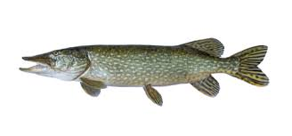

Om oss
Gäddvassen och dess vatten
Välkommen till Gäddvassen! Vår ambition är att erbjuda ett hållbart och roligt fiske för alla. Kontinuerlig isättning av ädelfisk i form av regnbåge och öring säkerställer ett fiske av högsta kvalitet och gott om föda för våra storvuxna gäddor. I sjön finns även abborre, mört och en och annan gammelgädda!  Läs mer om gäddanGäddvassen Fiskeförening
Ideela medarbetare i Gäddvassens Fiskeförening jobbar för att du som gäst ska få uppleva bästa tänkbara fiske och minimalt med trassel under ditt besök hos oss. För att hjälpa oss med detta ber vi dig att inför ditt besök läsa igenom våra Regler och VillkorTillsynsman Pontus ser till att trasslet uteblir